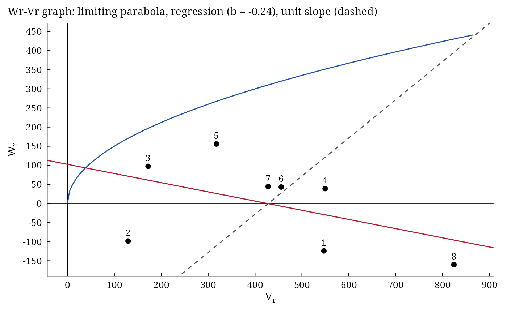

Hayman() performs Hayman's analysis of a complete diallel (parents, \(F_1\) and reciprocals: Griffing's
Method 1) from the plot data of a randomized complete block experiment: Hayman's analysis of variance (additive,
non-additive with its parts \(b_1\), \(b_2\), \(b_3\), maternal and reciprocal effects), the
array variances and covariances \(V_r\) and \(W_r\) with the \(W_r\)-\(V_r\) regression,
the components of variation \(D\), \(H_1\), \(H_2\), \(F\), \(h^2\) and \(E\)
with their standard errors, the derived genetic ratios and the tests of the adequacy of the additive-dominance
model.
Arguments
- y
response: a column of
datagiven by name (y = Yieldory = "Yield") or a numeric vector of lengthnrow(data).- Rep
replicate (block): a column of
dataor a vector, as fory.- Cross1
female parent of each plot: a column of
dataor a vector, as fory.- Cross2
male parent of each plot: a column of
dataor a vector, as fory.- data
a data frame (or
data.table) with one row per plot.
Value
An object of class c("da_hayman", "da_result", "list") with the components of earlier versions
followed by a new one:
Means\(P \times P\) matrix of cell means (female parents in rows).
ANOVAHayman's analysis of variance (class
anova):Total,Rep,Treatment, additive (a), non-additive (b) withb1,b2,b3, maternal (c), reciprocal (d),Error.VOLO\(V_{0L0}\), the variance of the parents.
In.Value\(\sqrt{V_{1L1}V_{0L0}}\), used to draw the limiting parabola.
a,bintercept and slope of the regression of \(W_r\) on \(V_r\).
Wr.Vr.Tableone row per array:
Wr,Vr,Wr.Minus.Vr,Wr.Plus.Vr,Yr(parental value),Wri(limiting parabola \(\sqrt{V_rV_{0L0}}\)),Wrei(fitted regression),Wreip(line of unit slope through the means).Components.of.VariationEstimate,StdErr,t.valueof \(E\), \(D\), \(F\), \(H_1\), \(H_2\), \(h^2\).Other.Parametersthe derived ratios (named rows).
Fr\(F_r\) of each array.
Tests(new) uniformity test \(t^2\), and \(t\) tests of \(b = 0\) and \(b = 1\): statistic, degrees of freedom, p-value.
Methods: print(), summary(), plot() (the \(W_r\)-\(V_r\) graph: limiting parabola,
regression line, line of unit slope, parents labelled; which = c("WrVr", "residuals", "qq")),
anova(), coef(), fitted(), residuals(), data.table::as.data.table(x,
component =); see diallel-methods.
Details
Data. \(P\) parents, all \(P^2\) crosses, \(B\) replicates. \(\mathbf{Y}\) is the \(P \times P\) matrix of cell means and \(\mathbf{T}\) the matrix of cell totals over replicates.
Analysis of variance (Hayman 1954b), with \(T_{i\cdot}\), \(T_{\cdot i}\), \(T_{\cdot\cdot}\) the totals of \(\mathbf{T}\) and all sums of squares divided by \(B\) to the plot scale: $$a = \frac{1}{B}\left[\frac{1}{2P}\sum_i (T_{i\cdot} + T_{\cdot i})^2 - \frac{2}{P^2}T_{\cdot\cdot}^2\right], \quad b = \frac{1}{B}\left[\frac{1}{4}\sum_{i,j}(T_{ij} + T_{ji})^2 - \frac{1}{2P}\sum_i (T_{i\cdot} + T_{\cdot i})^2 + \frac{1}{P^2}T_{\cdot\cdot}^2\right],$$ $$b_1 = \frac{(T_{\cdot\cdot} - P\sum_i T_{ii})^2}{P^2(P-1)B}, \quad b_2 = \frac{1}{B}\left[\frac{\sum_i (T_{i\cdot} + T_{\cdot i} - PT_{ii})^2}{P(P-2)} - \frac{(2T_{\cdot\cdot} - P\sum_i T_{ii})^2}{P^2(P-2)}\right], \quad b_3 = b - b_1 - b_2,$$ $$c = \frac{1}{2PB}\sum_i (T_{\cdot i} - T_{i\cdot})^2, \quad d = \frac{1}{B}\left[\frac{1}{4}\sum_{i,j} (T_{ij} - T_{ji})^2 - \frac{1}{2P}\sum_i (T_{\cdot i} - T_{i\cdot})^2\right].$$ \(b_1\) (1 df) tests the mean deviation of the \(F_1\) from the parents (directional dominance), \(b_2\) (\(P-1\) df) whether that deviation differs among parents, \(b_3\) (\(P(P-3)/2\) df) the remaining dominance (sca), \(c\) (\(P-1\) df) maternal effects and \(d\) (\((P-1)(P-2)/2\) df) the remaining reciprocal differences; every line is tested against the error of the block analysis.
Arrays. The reciprocal crosses are averaged: \(\bar{\mathbf{Y}} = (\mathbf{Y} + \mathbf{Y}^\top)/2\). Array \(r\) is column \(r\) of \(\bar{\mathbf{Y}}\); \(V_r\) is its variance and \(W_r\) its covariance with the parents (the diagonal of \(\bar{\mathbf{Y}}\)). \(V_{0L0}\) is the variance of the parents, \(V_{1L1}\) the mean of the \(V_r\), \(V_{0L1}\) the variance of the array means and \(W_{0L01}\) the mean of the \(W_r\). The regression \(W_r = a + bV_r\) is fitted by least squares; under the additive-dominance model \(b = 1\). The uniformity test (Hayman 1954a) $$t^2 = \frac{P-2}{4}\,\frac{\left[\mathrm{Var}(V_r) - \mathrm{Var}(W_r)\right]^2}{\mathrm{Var}(V_r) \mathrm{Var}(W_r) - \mathrm{Cov}^2(V_r, W_r)}$$ is compared with the \(F\) distribution on 1 and \(P-2\) degrees of freedom.
Components of variation (Hayman 1954a; Mather and Jinks 1982), with \(E\) the error variance of a cell mean (block and error sums of squares pooled, divided by \(B\)): $$D = V_{0L0} - E, \quad F = 2V_{0L0} - 4W_{0L01} - \frac{2(P-2)}{P}E, \quad H_1 = V_{0L0} - 4W_{0L01} + 4V_{1L1} - \frac{3P-2}{P}E,$$ $$H_2 = 4V_{1L1} - 4V_{0L1} - 2E, \quad h^2 = 4(\bar{Y}_{L1} - \bar{Y}_{L0})^2 - \frac{4(P-1)}{P^2}E,$$ where \(\bar{Y}_{L1}\) is the mean of all cells and \(\bar{Y}_{L0}\) the mean of the parents. Their standard errors use \(s^2 = \mathrm{Var}(W_r - V_r)/2\): \(\mathrm{Var}(D) = (P^5 + P^4)s^2/P^5\), \(\mathrm{Var}(H_1) = (P^5 + 41P^4 - 12P^3 + 4P^2)s^2/P^5\), \(\mathrm{Var}(H_2) = 36P^4s^2/P^5\), \(\mathrm{Var}(F) = (4P^5 + 20P^4 - 16P^3 + 16P^2)s^2/P^5\), \(\mathrm{Var}(h^2) = (16P^4 + 16P^3 - 32P + 16)s^2/P^5\), \(\mathrm{Var}(E) = P^4s^2/P^5\). Derived ratios: mean degree of dominance \(\sqrt{H_1/D}\), proportion of genes with positive and negative effects \(H_2/(4H_1)\), ratio of dominant to recessive genes \((\sqrt{4DH_1} + F)/(\sqrt{4DH_1} - F)\), the correlation of \(W_r + V_r\) with the parental values \(Y_{rr}\), the number of gene groups showing dominance \(h^2/H_2\) and the narrow-sense heritability \((D + H_1 - H_2 - F)/(D + H_1 - H_2/2 - F + 2E)\). \(F_r = 2(V_{0L0} - W_{0L01} + V_{1L1} - W_r - V_r) - 2(P-2)E/P\) for each array.
Changes from version 0.6.0. The column arguments are used (version 0.6.0 read the columns
Cross1 and Cross2 by name); \(H_2\) subtracts \(4V_{0L1}\) (version 0.6.0 added
it); \(W_r\) and \(V_r\) both come from the reciprocal-averaged table (version 0.6.0 took
\(V_r\) from the upper triangle and \(W_r\) from the unaveraged rows); the derived ratios are named;
the lines \(b\), \(b_3\) and \(d\) of the analysis of variance divide by 4 where version 0.6.0
divided by the number of replicates (the two agree only with 4 replicates, as in HaymanData); the tests of
the model are returned (Tests).
References
Hayman, B. I. (1954a). The theory and analysis of diallel crosses. Genetics, 39(6), 789–809. doi:10.1093/genetics/39.6.789
Hayman, B. I. (1954b). The analysis of variance of diallel tables. Biometrics, 10(2), 235–244. doi:10.2307/3001877
Hayman, B. I. (1957). Interaction, heterosis and diallel crosses. Genetics, 42(3), 336–355. doi:10.1093/genetics/42.3.336
Jinks, J. L. and Hayman, B. I. (1953). The analysis of diallel crosses. Maize Genetics Cooperation Newsletter, 27, 48–54.
Mather, K. and Jinks, J. L. (1982). Biometrical Genetics, 3rd edition. Chapman and Hall, London.
Singh, R. K. and Chaudhary, B. D. (2004). Biometrical Methods in Quantitative Genetic Analysis. Kalyani Publishers, New Delhi.
See also
Griffing, HaymanData, da-methods
Other DiallelAnalysisR analyses:
GardnerEberhart(),
Griffing(),
GriffingEnv(),
GriffingMeans(),
Heterosis(),
LineTester(),
NCDesign(),
PartialDiallel()
Author
Muhammad Yaseen (myaseen208@gmail.com), Kent M. Eskridge (keskridge1@unl.edu)
Examples
#-------------------------------------------------------------
## Hayman's analysis of a complete diallel
#-------------------------------------------------------------
Hayman1Data <-
Hayman(
y = Yield
, Rep = Rep
, Cross1 = Cross1
, Cross2 = Cross2
, data = HaymanData
)
Hayman1Data
#> Hayman's analysis; 8 parents, 4 replicates
#>
#> Analysis of variance
#> Df Sum Sq Mean Sq F value Pr(>F)
#> Total 255 127716
#> Rep 3 1036 345 3.001 0.031825 *
#> Treatment 63 104924 1665 14.468 < 2e-16 ***
#> Additive 7 15219 2174 18.887 < 2e-16 ***
#> Non-Additive 28 88243 3152 27.378 < 2e-16 ***
#> b1 1 1368 1368 11.881 0.000699 ***
#> b2 7 13530 1933 16.791 < 2e-16 ***
#> b3 20 73345 3667 31.859 < 2e-16 ***
#> Maternal 7 311 44 0.386 0.910004
#> Reciprocal 21 1151 55 0.476 0.975768
#> Error 189 21756 115
#> ---
#> Signif. codes: 0 ‘***’ 0.001 ‘**’ 0.01 ‘*’ 0.05 ‘.’ 0.1 ‘ ’ 1
#>
#> Components of variation
#> Estimate StdErr t.value
#> E 29.68 74.01 0.4010
#> D 195.29 222.03 0.8796
#> F 406.98 524.63 0.7758
#> H1 1856.57 510.41 3.6374
#> H2 1516.42 444.05 3.4149
#> h2 136.60 313.48 0.4357
#>
#> Tests of the additive-dominance model
#> Statistic Df p.value
#> Uniformity of Wr - Vr (t^2) 4.249 6 0.0849156
#> b = 0 (t) -1.329 6 0.2320521
#> b = 1 (t) 6.857 6 0.0004736
#>
#> All components: names(x); genetic ratios: summary(x); Wr-Vr graph: plot(x)
Hayman1Data$ANOVA
#> Df Sum Sq Mean Sq F value Pr(>F)
#> Total 255 127716
#> Rep 3 1036 345.4 3.0006 0.031825 *
#> Treatment 63 104924 1665.5 14.4683 < 2.2e-16 ***
#> Additive 7 15219 2174.1 18.8868 < 2.2e-16 ***
#> Non-Additive 28 88243 3151.5 27.3783 < 2.2e-16 ***
#> b1 1 1368 1367.6 11.8807 0.000699 ***
#> b2 7 13530 1932.9 16.7915 < 2.2e-16 ***
#> b3 20 73345 3667.3 31.8586 < 2.2e-16 ***
#> Maternal 7 311 44.4 0.3856 0.910004
#> Reciprocal 21 1151 54.8 0.4763 0.975768
#> Error 189 21756 115.1
#> ---
#> Signif. codes: 0 ‘***’ 0.001 ‘**’ 0.01 ‘*’ 0.05 ‘.’ 0.1 ‘ ’ 1
Hayman1Data$Components.of.Variation
#> Estimate StdErr t.value
#> E 29.67728 74.00881 0.4009967
#> D 195.28734 222.02642 0.8795680
#> F 406.98373 524.62797 0.7757568
#> H1 1856.57321 510.40597 3.6374442
#> H2 1516.41604 444.05285 3.4149450
#> h2 136.59673 313.48131 0.4357412
Hayman1Data$Other.Parameters
#> Other Parameters
#> Mean degree of dominance sqrt(H1/D) 3.08332278
#> Proportion of genes H2/(4H1) 0.20419556
#> Dominant to recessive genes 2.02092525
#> r(Wr + Vr, Yr) -0.15520512
#> r^2(Wr + Vr, Yr) 0.02408863
#> Gene groups h2/H2 0.09007866
#> Narrow-sense heritability 0.13579028
Hayman1Data$Tests
#> Statistic Df p.value
#> Uniformity of Wr - Vr (t^2) 4.248535 6 0.0849156066
#> b = 0 (t) -1.329317 6 0.2320520968
#> b = 1 (t) 6.856869 6 0.0004736084
#-------------------------------------------------------------
## The Wr-Vr graph
#-------------------------------------------------------------
plot(Hayman1Data)
